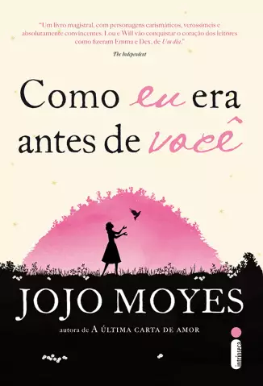
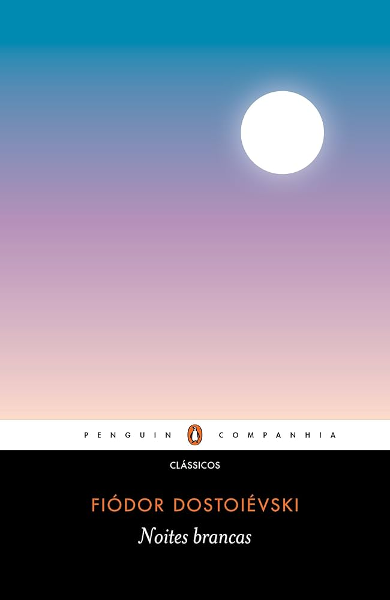
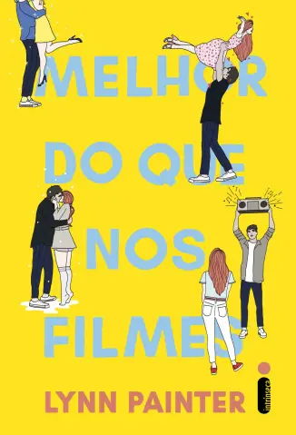

Entre Páginas: Um blog de romance
Sobre
Quem somos
Resenhas Populares
Mais lidos
Lançamentos
Romances da Semana (1984)

Meat is Murder (1985)
Louder Than Bombs (1987)

Louder Than Bombs (1987)

Louder Than Bombs (1987)